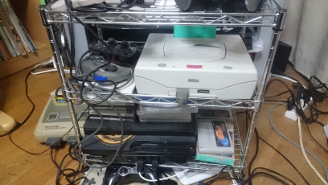
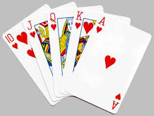
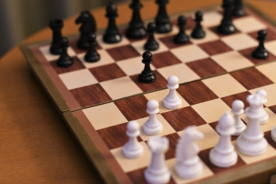
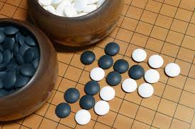
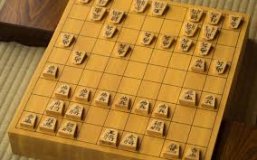
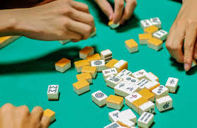
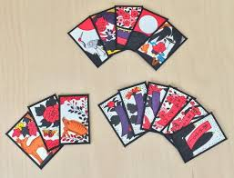
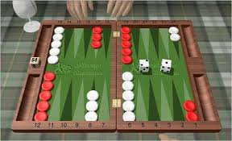
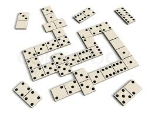
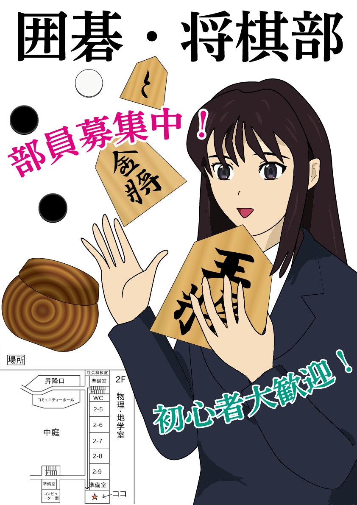

このサイトについて
- ISEのページロゴ
ページ紹介での利用は歓迎します。
このページは上記のような方針のもとそれぞれの趣味のページを書き上げています。当ページの制作方針の詳細や画像利用に関しては, 次のリンクページにて詳しく解説致しますので, そちらをご覧ください。なお, このページへのリンクはフリーとします。また, リンクを貼られた方はご一報くださるとありがたいです。希望があればこちらからもリンクを貼らせていただきます。
ひとこと: トップページに戻るには，個別ページの一番上にある，「ISEの個人サイト」のアイコンかテキストをクリックすると，トップページに戻ってこれます。
ページを見るときには，「PgUp,PgDn」を活用したり，「Space」を押してページを下げると見やすいです。また，一つ前/後のページに移行するのには，「Alt+左/右」のショートカットを使うと便利です。よろしければ活用してみてください。
サイト制作方針のサイトへ
ゲーム
- 
- 家にあるゲーム機ラック
裏にはPlayStationがある
ゲームに関しては, 580ソフト以上のゲームをプレイしており, その内訳としてファミコンからPS4まで幅広くやっています。シリーズに換算すると, 115シリーズ程あるので, それぞれに関して紹介すると共に, ゲームの歴史であったり, ゲームのジャンル, オススメのゲームを紹介していきます。
時間不足のため, ゲームの魅力紹介, 歴史といった記事などは出来上がっていません。コンテンツとしては致命的なレベルです。(完成度2%)
ゲーム紹介サイトへ
電子回路
電子回路に関しては, 小学生の高学年から徐々に遊び始めるようになりました。毎年の夏休みの工作として制作していたのですが, その作品と, 参考にしたページなどを紹介していきます。
時間不足のため, 参考になるページの紹介は行えていません。(完成度50%)
電子回路紹介サイトへ
プログラミング
プログラミングに関しては, 小学生の頃から行っており, 自分でゲームを作成したり, マイコンを制御したりしてきました。そのため, 皆さんには, プログラミング言語の紹介と共に, どのようなことができるのか, また, オススメの本に関して紹介していきます。
時間不足のため, プログラミングの概要解説(プログラミング言語の紹介など)やオススメの本の紹介は行えていません。(完成度10%)
プログラミング紹介サイトへ
アニメ

- アニメ画像は版権問題があるため,
自分の画像を代わりに貼っておきます。
(アニメ風)
アニメに関しては, 幼少期から大好きであり, これまでで300作品以上の作品を視聴してきました。そのため, 皆さんにはそれぞれのアニメに関して深堀りして紹介するとともに, オススメのアニメなど, それぞれ項目別に紹介していきます。
時間不足のため, アニメの魅力紹介, 各アニメの紹介記事などは出来上がっていません。そのため, データベース的なざっくりとしたまとめ方になってしまっています。コンテンツとしては致命的なレベルです。(完成度2%)
アニメ紹介サイトへ
ピアノ
ピアノに関しては, 2歳の頃から始めており, それから10年程習っていました．最近は, ピアノを止めてから結構なブランクがあるため, あまり上手ではありませんが, 趣味程度にアニソンやゲーム音楽を弾いたりして楽しんでいます。このページでは, ピアノをどのように取り組んできたのか紹介すると共に, ピアノや音楽に関連するオススメの本を紹介していこうと思います。
時間不足のため, ピアノの取り組みに関する記事は完成したもののオススメの本紹介が出来ていません。(完成度70%)
ピアノ紹介サイトへ
テーブルゲーム
テーブルゲームに関しては, 幼稚園の頃から好きで, よく祖父とやっていました。それ以降, テーブルゲームが趣味となり, 自分でテーブルゲーム関連の本やサイトを読み漁った結果, 世界にある15種類くらいのテーブルゲームを習得しました。テーブルゲームの紹介ページでは, その中でも皆さんに是非遊んでいただきたいものを紹介します。
時間不足のため, 記事は出来上がっていません。コンテンツとしては致命的なレベルです。(完成度2%)
| トランプ |
チェス |
囲碁 |
将棋 |
|  |
 |
 |
 |
| 麻雀 |
花札 |
バックギャモン |
ドミノ |
|  |
 |
 |
 |
テーブルゲーム紹介サイトへ
ミリタリー
ゲームの影響かは知りませんが, 昔からミリタリー関連のものが好きです。特に, 軍事や装備, 作戦には関心があり, 銃火器, 戦闘技術, 作戦指揮, サバイバルに関して調べたり, 軍服を収集したりしていたこともあります。特にお気に入りの銃はglock17とfamasとL96A1です。また, 銃火器の中ではスナイパーライフルが一番好きで, スナイパーには憧れていたりします。
他にも迷彩柄や軍服, その他ミリタリーグッズも好きなので, 時々通販で集めていたりします。ミリタリーの紹介ページでは, 主にオススメの本や装備に関することを纏めています。
時間不足のため, ほとんど記事は出来上がっていません。(完成度3%)
ミリタリー紹介サイトへ
イラスト

アニメや漫画とかが好きなので時々イラストを描いたりもします。また, 画力の向上のためにイラストを募集する機会には出来るだけ参加し, 絵を描く機会が得られるようにしています。イラストの紹介ページでは, 絵師に関して紹介をしたり, 絵の描き方や, オススメの本に関して紹介しています。
時間不足のため, ほとんど一般的な記事は出来上がっていません。(完成度5%)
イラスト紹介サイトへ
自転車旅・鉄道旅

- ↑長野県大町市での写真
小学生・中学生の頃から, よく友達と計画を立てて日帰りのサイクリングに行っていました。企画したり, ルートを調べたりするのは大変だったかもしれませんが, とてもいい思い出として残っているので, また行きたいと思っています。最近では, 長野県に来たということもあり, 峠を越えたり自然を満喫できたりするため, 毎週100km以上での日帰りサイクリングを行っていたりします。サイクリングのページでは, 主に自転車の種類について解説したり, いままで散策してきた, 長野県のスポットについて紹介しています。
時間不足のため, 記事の一部が完成していません。比較的まともな方です。(完成度85%)
サイクリング紹介サイトへ
資格取得
最近自分が気になっている資格に関して紹介していきます。
時間不足のため, 記事は出来上がっていません。コンテンツとしては致命的なレベルです。(完成度1%)
資格紹介サイトへ
コーヒー
趣味と言えるか分からないけれどコーヒー大好きです。
コーヒーに関しては, 月に200g程コーヒー豆を買ってきては, 家でミルをひいて3種類の抽出方法を使い分けながらドリップして最高においしい新鮮なコーヒーを満喫しています。
コーヒーの1杯はまさに幸福です。
このページでは, コーヒーの知識に関することがらや, コーヒーの淹れ方について解説していきます。
時間不足のため, 最低限の抽出方法に関する記事しか出来上がっていません。比較的まともな方です。(完成度60%)
コーヒー紹介サイトへ
鉄道
まだまた，鉄道に関する知識や経験は不足していますが，最近行った鉄道旅の記事を作成しましたので，趣味として，紹介しています。
時間不足のため, 一部の記事しか完成していません。(完成度2%)
鉄道紹介サイトへ
料理
いつか追加予定。先にarticleだけ追加しておいたので，リンク先は鉄道ページになっています。
鉄道紹介サイトへ
その他趣味のページ
その他, 上記では書ききれなかった趣味の紹介ページを作成しました。
時間不足のため, ほとんど記事は出来上がっていません。(完成度1%)
その他趣味紹介サイトへ
オススメの本紹介・書評
私のオススメ本をそれぞれの分野において紹介します。なお, このような本の紹介はそれぞれの趣味ページにも貼られていると思うので, ここではそれらも含めた総合版となっています。
時間不足のため, ほとんど記事は出来上がっていません。(完成度0%)
本紹介サイトへ
他サイトへのリンク紹介
私のオススメサイトをそれぞれの分野において紹介します。なお, このようなリンクページはそれぞれの趣味ページにも貼られていると思うので, ここではそれらも含めた総合版となっています。
時間不足のため, ほとんど記事は出来上がっていません。(完成度0%)
リンク紹介サイトへ